The 3D Beetle extension is heavily inspired in the Beetle Blocks Snap! mod, orignally designed by Eric Rosenbaum and Duks Koschitz and developed by Bernat Romagosa during the years 2014-2020.
Beetle Blocks was aimed at 3D fabrication, especially targetting 3D printing, which is why the 3D Beetle extension also allows exporting the generated geometry for 3D printing.
Then you should know that the biggest change you'll need to adjust to is that there are no shape primitives in the 3D Beetle extension. All possible geometry is generated by extrusion. The rest of the extension should feel very natural for you, as all the other operations have been made to work pretty much identically, and the coordinate system has also been preserved.
Additionally, the 3D Beetle extension provides a few extra operations and features that you will easily adapt to.
You can refer to the blocks reference at the end of this article to learn what every single block does.
First of all, you will need to open the 3D viewport in order to be able to see the Beetle and the geometries you generate. To do so, navigate to the 3D Beetle category and click on the button at the top of the blocks palette, labeled Open 3D Window.
The Beetle is a character that can move around in 3D space. Here's what it looks like in its default color:
This character is to 3D what the Lego turtle is to 2D. Turtles can move on a 2D plane, but beetles can additionally fly and dig underground, which makes them very apt at exploring the third dimension.
You can move and rotate the Beetle by using its particular movement and rotation blocks. These work very much like the usual Motion blocks in Snap!, but the extra Z axis makes things slightly more complicated.
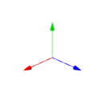
You can always look at the three axes of rotation -X (blue), Y (red) and Z (green)- to determine what your rotation or movement operation will have the beetle do.
While moving, the Beetle is also able to generate 3D geometry by means of what we call extrusion. Extruding is leaving a 3D trail along a path. Think of it as if the Beetle was carrying a pastry tube, or one of these play dough extruders, with interchangeable headers.
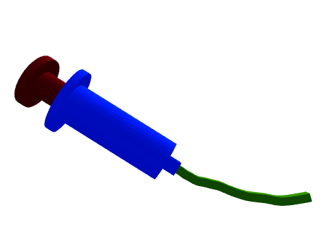
Extrusion is the only way to generate geometry in the 3D beetle extension, but it is a very powerful construct. As you gain experience with the extension you'll find that all shapes can be constructed in terms of extrusions of 2D profiles and polygons.
Extruding a single point will generate a line.
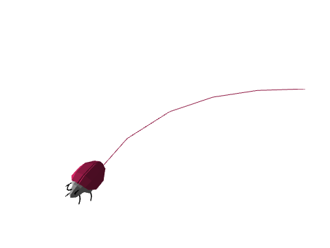
The block includes an option in the dropdown menu for a point, centered right at the center of the beetle.
Similarly, extruding a curve will generate a surface. A curve is any collection of points in a 2D plane that don't define a closed polygon.
The block includes default options in the dropdown menu for two different curves: semicircle and line. If you want to extrude a different curve, you can always pass a different collection of 2D points to the block:
When extruding a polygon, the Beetle will generate a new prism at each movement step, with its base shaped as said polygon and with the end cap matching the current beetle rotation.
The block includes default options in the dropdown menu for three different polygons: circle, triangle and square. If you want to extrude a different polygon, you can always pass a different collection of 2D points to the block, but you need to make sure that the first and last points are duplicated so that the Beetle knows you mean to extrude a closed shape:
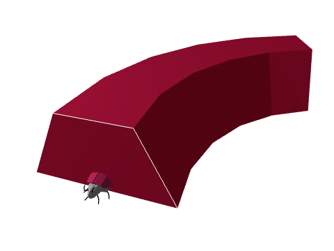
Extrusion shapes can be scaled up or down by using the block. The scale is a multiplier that is applied to the dimensions of the current extrusion shape.
Note that, as is often the case in Snap!, you can drop a list into the scale block to get it to affect the width and height of the shape separately.
Another operation you can apply to the current extrusion shape is an offset. This will affect the position of the extrusion shape relative to the Beetle.
Many shapes can be thought of in terms of combinations of the basic extrusion shapes and their possible scaling and offsetting transformations. Others can relatively easily be expressed as a list of points. Sometimes, though, your extrusion base may be too complex to input manually into a list.
In these cases you'll want to use the log sprite positions block to trace the
path followed by a Snap! sprite and turn into an extrusion base.
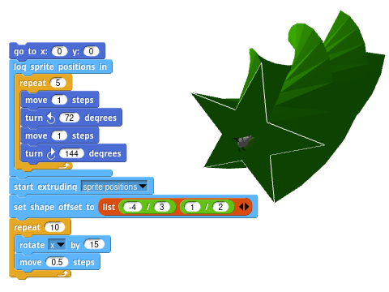
All extrusion shapes are just lists of points, which are in turn just lists of two numbers. Here's the list of points of the default triangle extrusion:
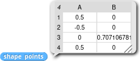
Thus, you can apply any transformations you wish to the shape as you would with
any other list in Snap!. For instance, you could apply a ceiling
operation to the triangle shape to turn it into a right triangle:
A very powerful construct in the 3D Beetle extension is the zero-step extrusion. When you ask the beetle to move zero steps while extruding, it will generate a face in 3D space. This in itself may not sound too useful, but in combination with rotation and scaling it can produce incredibly complex results. For instance, here's how to generate a smooth corner by performing a series of turns with zero-step extrusions in between:
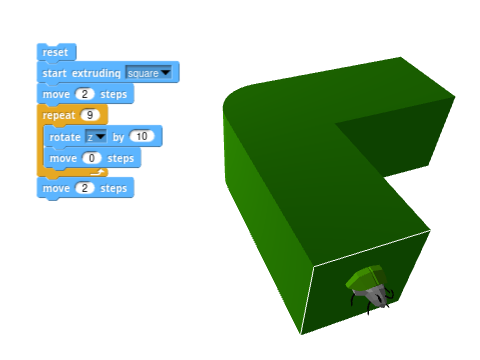
In the examples section you'll see zero-step extrusion used extensively to generate a wide variety of shapes, such as revolution solids.
Since the only way to generate volumes with the Beetle is to extrude 2D shapes along a path, it can be interesting to start by taking a look at how to generate a bunch of basic solids.
An important block that you may want to have at hand is  . This
block will remove all geometry from the 3D view, and get the Beetle back to its
original position.
. This
block will remove all geometry from the 3D view, and get the Beetle back to its
original position.
A cube can be understood as an extrusion of a square. Let's begin by selecting the correct extrusion base from the dropdown menu in the following block:
You'll notice that the Beetle is now showing that shape around its body.
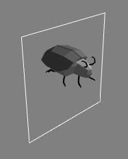
From this point on, any movement you ask it to perform is going to leave a square trail behind it. To get it to generate a cube, you just need to ask it to walk one single step:
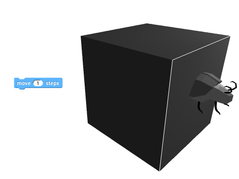
Similarly, extruding a circle will produce a cylinder.
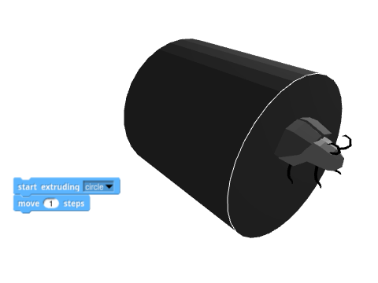
Here's where things can begin to get a little bit tricky. If you want the cylinder to have no caps -that is, if you want to generate a tube-, you can't rely on a simple prism extrusion. The base shape would need to be a circle with a smaller circular hole in the middle, which is not permitted.
One way to achieve a tube is to extrude a line around a circular path, thus generating the walls of the cylinder one by one as the beetle walks in a circle:
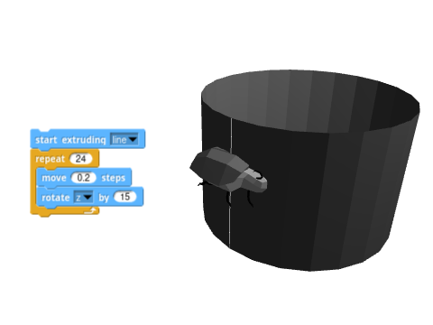
To change the height of the tube you could specify a custom line to extrude:
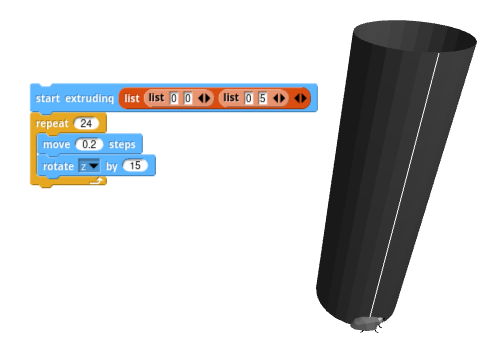
Or you could simply change the scale of the shape:
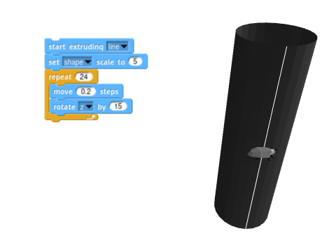
If you want the tube to be centered on the beetle, you can do so by offsetting the shape and performing a series of zero-step extrusions.
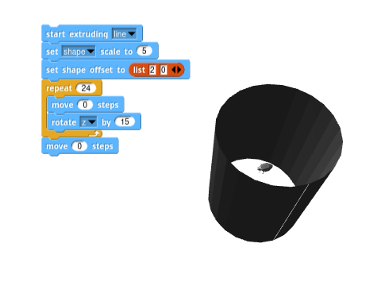
Notice how you'll need to add an extra zero-step extrusion after the loop in order to close the cylinder.
The previous tube has walls of zero thickness. An easy way to achieve a thick wall is to extrude a custom rectangle along a circular path:
Notice how the tube presents a little glitch. The last extrusion step didn't quite close the walls as you may have expected. That is because the extrusion step is performed when the beetle moves, and the beetle moved before the last 15º rotation, when it happened to end up at the same spot and rotation it started from.
One simple solution is to perform an extra extrusion by asking the beetle to move zero steps after the loop:
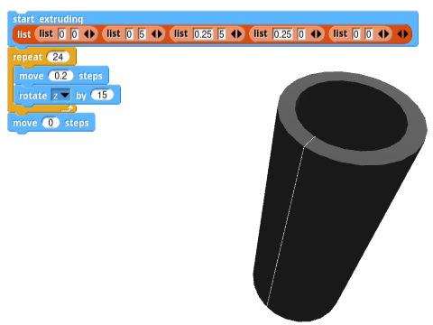
An even easier way to generate a tube with thick walls is to scale a square non-uniformly. The x scale will define the thickness of the walls, while the y scale will define the height of the tube.
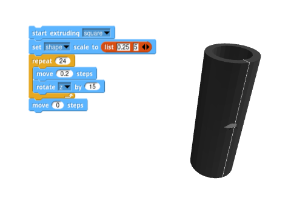
As is very often the case, there are multiple ways to think of a shape. You could also generate a tube by extruding two semiannuli (yes, that's the word mathematicians use for half a ring). You can first experiment with drawing the semiannulus in turtle geometry in Snap!, which will definitely be much easier if you first load the Arcs library from the Library Browser.
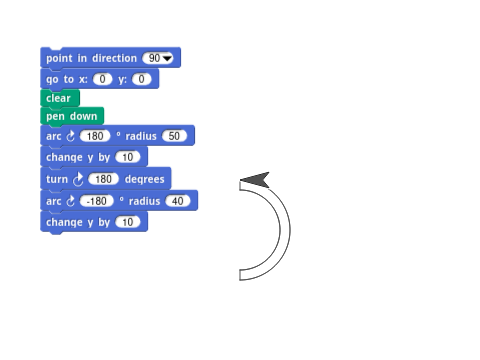
You can now turn that shape into an extrusion base by wrapping the script in a
log sprite positions block:
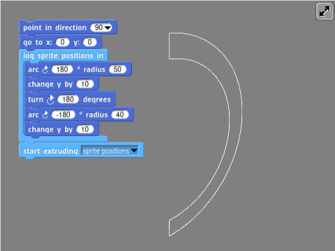
Notice how this created a huge base. A single step for a Snap! sprite becomes a millimeter in the Beetle world, and beetles are tiny critters. This also helps increase the precision of your shapes. In this case, though, you can apply a scale multiplier to bring the size down.
The only thing missing now is to extrude this shape twice while rotating it in between.
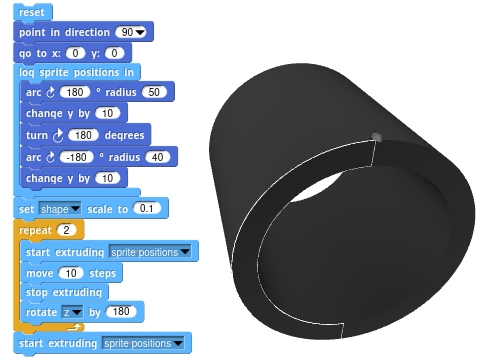
This is obviously too much of a hassle if all you wanted is to generate a tube, but it opens the door to a completely different set of shapes that wouldn't be possible with a rectangular-based tube extrusion, such as this thimble:
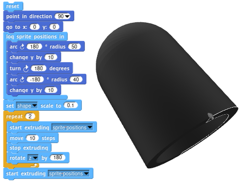
Or this smoothly bent tube:
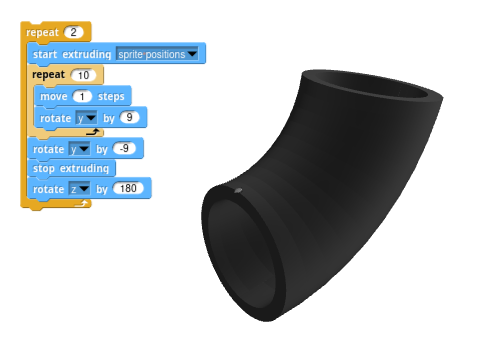
Extruding with zero-movement steps lets you generate revolution solids rather easily.
For example, revolving around a center point while extruding a circle will generate a sphere.
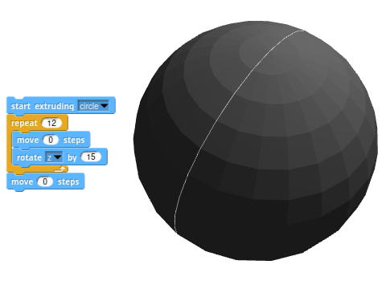
However, the internal geometry of this sphere is a bit wrong. The Beetle extension does its best to guess what you meant, but some 3D experts will frown upon this sphere. Some of the facets are facing inside-out, and there is also an internal circular face that is certainly not needed, since it'll never see the light of day.
Both the wireframe and ghost mode toggles can help you visualize what your geometry really looks like.
Most 3D software will take this sphere without flinching, but others will complain that the geometry is not correct and show it to you like it really is:
If your 3D software complains, then the "proper" way to make a sphere is to revolve an open semicircle so that only the outer shell is generated, and with its facets always facing the correct way.
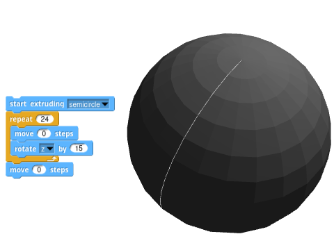
The geometry now looks perfectly fine in wireframe mode.
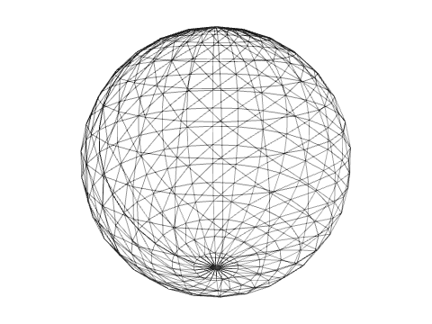
Additionally, all 3D software renders it properly with no complaints about reverse facets or internal faces.
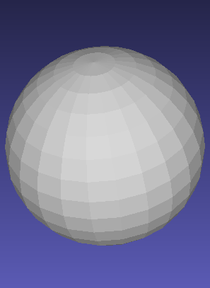
A cone can be understood as a revolution of a triangle. You could, thus, extrude a triangle while turning around the Z axis and moving zero steps at each rotation.
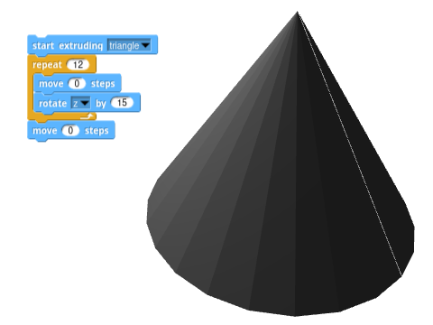
However, similarly to what happened with the sphere example, the resulting shape will be frowned upon by some 3D software:
Just like before, the culprits are some of the faces that have ended up inside-out.
To get a proper cone we will have to revolve two lines forming an acute angle.
This can be easily achieved by passing in a list of three points that describe an acute angle to the block. This will also let us change the radius and height of the cone rather easily.
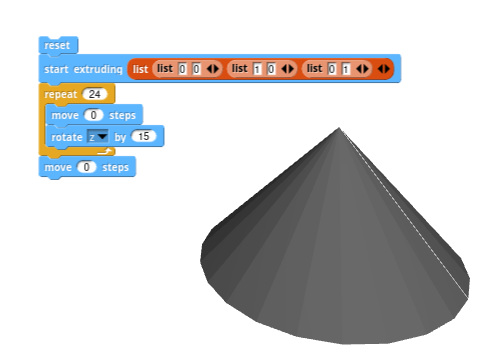
A different way to think of a cone is as a circular extrusion that scales down into a point while being extruded.
The 3D Beetle extension provides a block that lets you change the scale of the extrusion base, as well as the scale of the movement of the beetle.
To make a cone, you can start by extruding a 0-step circle, then setting the shape scale to zero, then moving as many steps as deep you want your cone to be.
A simple pine tree can be generated by revolving a 2D zig-zag pattern. You can
use the already familiar log sprite positions block to get a list of points
that follow said zig-zag pattern.
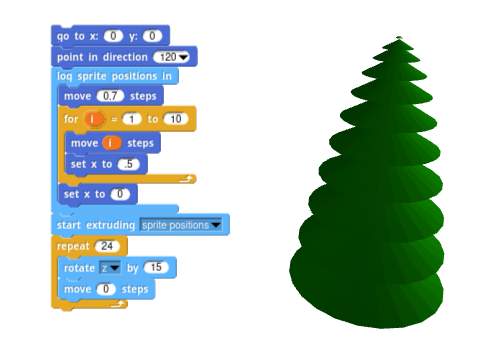
A similar tree can be generated by extruding a succession of smaller and smaller rather flat cones. This method will also allow you to tweak the color of each floor independently.
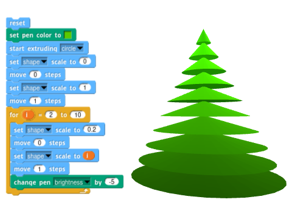
A pyramid can also be thought of in different ways. An obvious one is to stack a bunch of flat square boxes one on top of the other in decreasing sizes.
To achieve this in the 3D Beetle extension you can again make use of the shape scale.
Notice how, for each floor, you first need to create a zero-length extrusion. Otherwise, your pyramid would lack any stairs.
Another way to think of a pyramid is as a four-stepped revolution of a stairwell. For each corner, the Beetle needs to rotate 90º and set an extrusion step by moving zero steps.
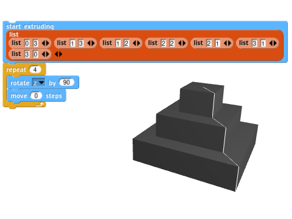
Of course, listing all the points for the stairwell by hand is going to be a very tedious job if you want the pyramid to have any more floors.
A rather cumbersome loop could do the trick, but there are more elegant ways to generate the stairwell. This is where mixing the 3D world of the beetle and the 2D world of Snap! shines. We can just tell a sprite to walk in a stair pattern using regular turtle geometry, and store the sprite position at each of the steps.
For clarity, you could get the sprite to draw the stairwell on the stage so you can see what the profile will look like. Notice how it's important to not close the shape if you don't want to end up with unwanted internal faces, while it's also important to add a horizontal line at the bottom if you want the pyramid to have a bottom face.
Now you don't need the pen code anymore. You can just wrap the movement code in
a log sprite positions block and start extruding that shape. While you're at
it, you can scale it down else you end up with a real-sized pyramid!
The same code from before will now generate a ten-story pyramid.
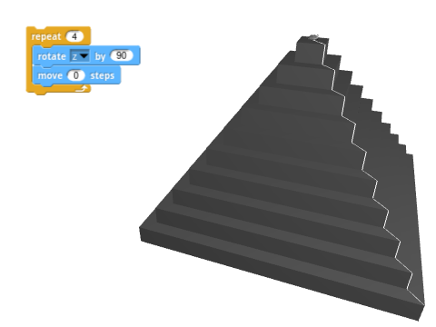
This is a classic example brought straight from Beetle Blocks. You begin by making a torus, or a doughnut, with a circular extrusion.
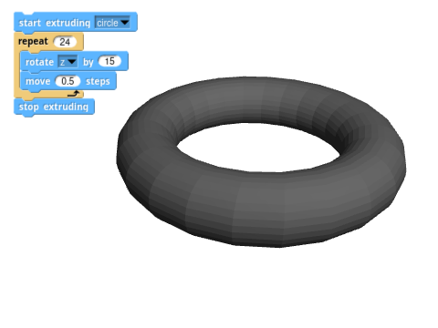
Wrapping the torus in another loop that rotates around another axis will create a doubly looped shape. 1Note that this operation can get rather slow on some browsers.
If you perform the secondary rotation on the y axis (up/down, or pitch) you will end up with a sort of yarn ball.
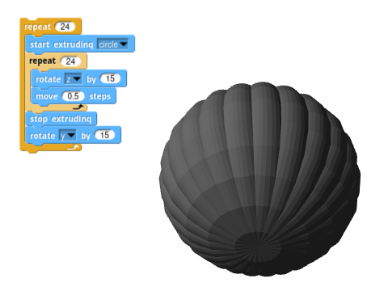
But performing the secondary rotation on the x axis (clockwise/counter-clockwise, or roll) will yield a torus of toruses.
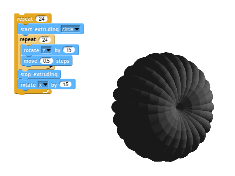
If you now increase the scale of both movement and shape by a little factor after each inner torus, you'll end up with a shape resembling a snail shell.
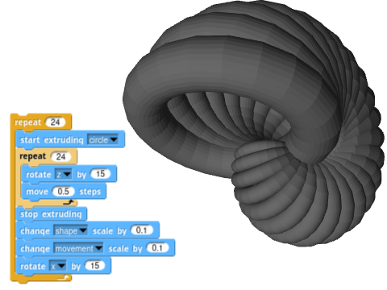
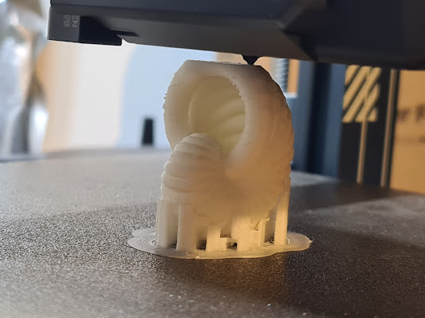
Of course, nothing stops you from making it more pleasing to the eye by playing a little bit with the pen color.
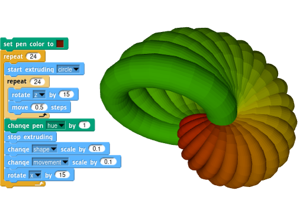
| Erases all 3D geometry and takes the Beetle back to its original position and orientation. It also erases the position and rotation stack (see push/pop position blocks). It does keep the current Beetle color. | |
| Takes the Beetle back to its original position and orientation. | |
| Moves the Beetle the specified number of steps forward. A Beetle step equals one millimeter. Beetles are small! | |
 |
Moves the Beetle to an exact position in 3D space. Takes a 3-element list in the form (x y z) as an input. |
 |
Sets the Beetle's position in the specified axis, relative to the origin, to the specified value. |
| Changes the Beetle's position in the specified axis, relative to the origin, by the specified amount. | |
 |
Changes the Beetle's position in the specified axis, relative to its current position and rotation, by the specified amount. |
 |
Reports the Beetle's current absolute position (relative to the origin) in the specified axis. |
 |
Rotates the Beetle around the specified axis by the specified amount of degrees (0-360). |
 |
Sets the Beetle's rotation relative to the specified axis to the specified value. |
Gets the Beetle to look straight towards a point in 3D space. Takes a 3-element list in the form (x y z) as an input. |
|
| Reports the Beetle's current rotation relative to the specified axis. | |
Starts leaving a trail in the specified shape. Also accepts a list of 2D points in the form (( x1 y1 ) (x2 y2) (x3 y3) ... )
as a base shape, such that it describes a curve or closed polygon. The
Beetle will consider the list to describe a closed polygon when the
first and last points are the same. The sprite positions menu options needs to be used in conjunction with the log sprite positions block. |
|
 |
Stops leaving a trail. |
Records all positions visited by a regular Snap! sprite
while running the blocks inside so that they can be extruded later by
the Beetle. To extrude the logged positions, select sprite positions from the dropdown menu in the start extruding block. |
|
| Returns a list of all points that make up the current extrusion base. | |
 |
Offsets the extrusion center by amounts specified by the provided two-item list. The first item in the list represents the horizontal offset, and the second one represents the vertical offset. |
| Sets the scale (multiplier) of the extrusion trail section, or the scale of the Beetle's movements, depending on the selection, to the specified value. When shape is selected, if provided with a list of two numbers, the first one will affect the horizontal scale and the second one will affect the vertical scale of the shape. | |
| Changes the scale (multiplier) of the extrusion trail section, or the scale of the Beetle's movements, depending on the selection, by the specified amount. When shape is selected, if provided with a list of two numbers, the first one will affect the horizontal scale and the second one will affect the vertical scale of the shape. | |
 |
Reports the scale (multiplier) of the extrusion trail section, or the scale of the Beetle's movements, depending on the selection. |
 |
Stores the current Beetle position and rotation, so that it can be revisited later. |
 |
Takes the Beetle back to the last stored position and rotation. |
| Reports a picture of what the Beetle is seeing from its current position and rotation. |